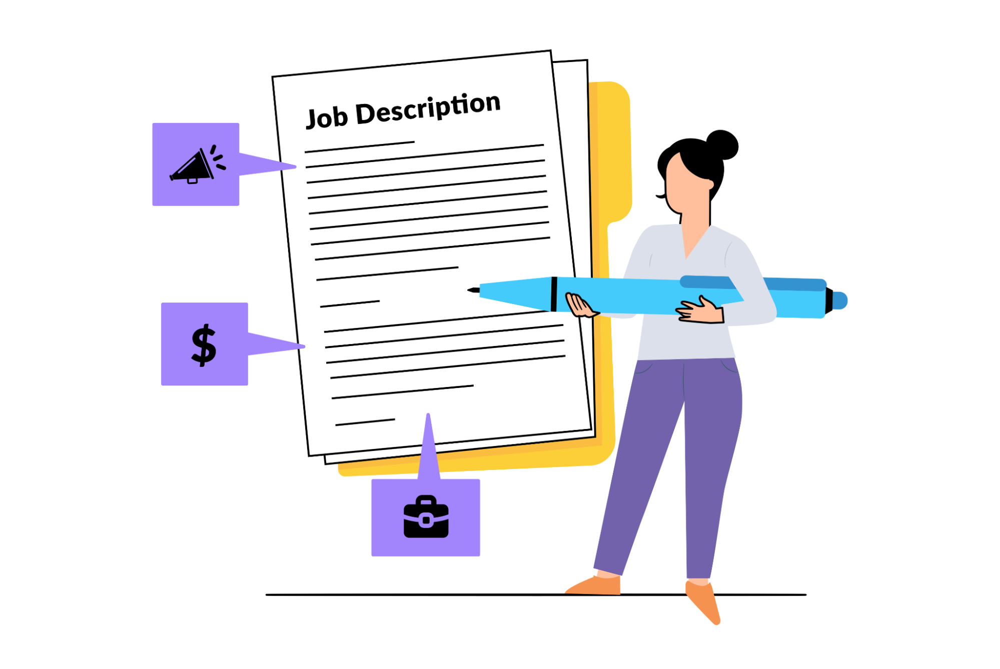

Abstract/Introduction
This work term report will document what it was like working as Doctor McCuaig's research assistant in the department of the School of Computer Science at the University of Guelph from May 2025 to August 2025. Expect key details on learning goals and their associated reflections in the work term, what the research project was, how the research project developed over the work term, the state of the research project after the work-term concluded, and the job description of the role I took for the summer work-term.
Do note that this is my third full-time research assistantship in computer science, which will, hopefully, be reflected in how I describe my experiences working on my third research project this past summer.
Information about the Employer
My Summer 2025 co-op work-term took place at the School of Computer Science at the University of Guelph, which is, obviously, located in Guelph, Ontario, Canada. The University of Guelph was founded in 1964, with the School of Computer Science being born in 1971, a mere 7 years after the university was founded. Many people know the university for its agricultural and veterinary programs, but it has developed into a strong comprehensive university since its birth in 1964, with computer science serving as one of its most important fields during its existence and operation.
As with any good university, the University of Guelph is quite research intensive without compromising on its teaching capacity. Even within the School of Computer Science by itself, there are many excellent experts in several computing subdomains that encompass the following: cybersecurity, human computer interaction (also known as "HCI" for short), bioinformatics, machine learning, data science and statistics, education, healthcare, theoretical computer science, and computer vision. Every summer, fall, and winter, Professors and their research teams – which comprise of graduate students and undergraduate research assistants – are hard at work contributing to the cutting edge of the subdomains of computing mentioned, and my summer work-term was a mere glimpse into how this well-oiled research machine really works at the university.
When it concerns teaching, the undergraduate programs at the University of Guelph are excellent, and the computer science programs are no exception. The undergraduate computing program at Guelph is very rich and well-rounded in-terms of the breadth and depth of knowledge covered in the computing courses. And, the computing undergraduate program's students often end up doing well in their careers both during the latter years of their education and after they graduate because the program is well designed to prepare them for the industrial and academic fields within computing. As for class sizes, the university often admits over 300 students every year, and has a healthy set of Professors, sessional instructors, and teaching assistants (both graduate and undergraduate) to support its students throughout their journeys in the computing program. Further, the university has a strong computer science co-op program for its undergraduate students, which has notably ended up with landing its students in many valuable industrial and academic roles during their stay in the academic program, and thus paving the way for them to continue shaping their careers however they want to post graduation.
Information about the Project
The project I worked on under Doctor Judi McCuaig and her PhD student: Przemyslaw Pawluk's joint-supervision is called "Sufler", which is Polish for "prompter", and it serves as a real-time tutor prompting solution for tutoring that takes place over online meeting platforms like Zoom. The project brings together existing and novel technologies from web development, machine learning, and virtual communications platforms into one cohesive and focused solution to improve the quality of the tutoring tutors provide.
The key technologies we used for developing Sufler are:
- the React library for developing JavaScript user interfaces;
- the JavaScript standard library for building interactive webpages within web browsers;
- the TypeScript programming language for developing scalable JavaScript codebases;
- the Golang programming language for developing secure, scalable, performant, and maintainable systems for handling all the non-user facing responsibilities (also known as "backend responsibilities") of the web application;
- the various tools found within the standard and third-party libraries of the Golang programming language to build the same "backend" systems mentioned earlier;
- the Redis in-memory database solution for developing a fast and scalable non-persistent database for storing and accessing critical information relevant to the backend responsibilities quickly;
- a scalable cloud-based web application processing interface (API) for speech-to-text (STT) meeting transcription solution in Recall.ai;
- a large language model (LLM) cloud-based web API solution in OpenAI's ChatGPT 5 family of models for real-time meeting transcript analysis and tutor hinting at scale;
- and a web application meeting solution in using Zoom's web API and their user-facing frontend TypeScript/JavaScript software development kits (SDKs) to allow users to host and participate in online meetings via a web interface.
The Sufler project was finished at the end of the co-op work term, and we, if we say so ourselves, are quite happy with the final outcome of the project. We managed to get a real-time, tutor hinting system working, and the results pave the way for much more research in the field of artificial intelligence (AI)-assisted teaching. We are very proud of what we achieved, and I can confidently claim that this co-op work term is the one where I learned the most in the shortest amount of time, and was the happiest as a both a student and key member of the technical staff of the project.
Since the project's first version was done, we are working right now on adding useful features for storing and formatting meeting transcripts and the hints given to the tutor throughout the tutoring session persistently in a database only the Golang backend stack has access to and knowledge of, making the backend stack more flexible to accepting and working with different STT and LLM providers, performing experiments with the different STT and LLM providers and their various models for comparing the quality of the meeting transcripts and the hints given to the tutor based on the different combination of AI tools used, and developing testing suites for the existing frontend and backend codebases of the project to find and fix bugs early in the project's development lifecycle.
Learning Goals
Learning Goal 1
Develop proficiency in React framework development and API integration for building technology-enhanced tutoring applications.
Action Plan 1
- Master React framework fundamentals including component architecture, state management, and lifecycle methods
- Learn to integrate ChatGPT API and other language model APIs into React applications
- Implement RESTful API connections and third-party service integrations
- Practice debugging and optimizing code for functionality and performance
- Maintain comprehensive documentation of all code and development processes
Measure of Success 1
- Successfully build and deploy functional React components for the tutoring application
- Demonstrate seamless integration of ChatGPT API with proper error handling and response management
- Code passes testing requirements and maintains consistent performance standards
- Documentation is complete, clear, and enables other developers to understand and extend the work
Reflection 1
I have met all of my measures of success for this goal, and have gone beyond them, too. My work in this co-op work term has enabled me to develop a useful and reliable feature-rich frontend stack for my full-stack project, and I have gained much confidence in my ability to build frontend stacks from scratch going forward now.
Learning Goal 2
Gain comprehensive understanding of qualitative research methods and educational taxonomies used in tutoring effectiveness research.
Action Plan 2
- Study existing educational taxonomies that classify tutoring behaviors and teaching strategies
- Learn qualitative data analysis techniques for coding and interpreting textual research data
- Master qualitative research software tools for managing and analyzing datasets
- Understand the theoretical framework behind technology-enhanced tutoring and the transition from telling to guiding approaches
- Apply research ethics principles when working with human subjects data
Measure of Success 2
- Demonstrate ability to identify and analyze patterns, themes, and insights from qualitative datasets
- Successfully apply appropriate educational taxonomies to classify tutoring behaviors
- Show proficiency in using qualitative analysis software tools
- Contribute meaningful insights to the research project based on data analysis findings
Reflection 2
I have not had the chance to perform a post-mortem data analysis of how our research project was used by tutors in the real-world, so I cannot say that I have met this goal's measures of success. The actual technical full-stack project proved to be a lot more work than initially planned, and we are just managing to wrap it up right now, which is the end of the work term. Hence, I can only claim that I did not meet this goal by the end of my current work-term.
Learning Goal 3
Develop advanced technical writing skills through research documentation, code documentation, and potential academic publication contributions.
Action Plan 3
- Create detailed technical documentation for all software development work
- Write comprehensive research reports documenting qualitative data analysis findings
- Contribute to academic writing processes including literature reviews and methodology sections
- Participate in preparing research findings for potential conference submission or publication
- Maintain clear and professional communication in all project-related correspondence
Measure of Success 3
- Technical documentation is clear, comprehensive, and enables knowledge transfer to other team members
- Research reports effectively communicate complex findings to both technical and non-technical audiences
- Written contributions meet academic standards for clarity, rigor, and scholarly presentation
- Feedback from supervisors consistently indicates improvement in writing quality and effectiveness
Reflection 3
I can safely say this goal has been mostly met given that I have had to do a lot of communication, both written and non-written throughout the work-term with my supervisors. Seeing as I have had positive feedback from my supervisors over my communication style and frequency during the co-op work term, I have no reason to doubt that I did not meet this learning goal according to the measures of success described. However, I did not get the chance to write a research manuscript or a research report just yet because the actual pre-requisite full-stack technical project took a lot longer than anticipated to complete - we are actually in the process of wrapping it up right now. Despite this, I can still claim that I met this goal well, and I am happy with the progress made on said goal.
Learning Goal 4
Develop sophisticated analytical skills for evaluating tutoring effectiveness and designing technology solutions that support pedagogical best practices.
Action Plan 4
- Analyze existing tutoring methodologies to identify key differences between telling and guiding approaches
- Critically evaluate how technological augmentation can support effective tutoring strategies
- Design and implement software features that promote questioning-based guidance rather than direct answer-giving
- Assess the effectiveness of different technological interventions through data analysis
- Apply systems thinking to understand the complex relationships between tutor behavior, technology design, and learner outcomes
Measure of Success 4
- Demonstrate ability to identify and articulate key factors that distinguish effective from ineffective tutoring approaches
- Successfully design technology features that demonstrably support guiding behaviors over telling behaviors
- Show evidence of sophisticated analytical thinking in interpreting qualitative research findings
- Contribute innovative solutions to technical and pedagogical challenges encountered in the project
Reflection 4
For this goal, I did meet most of the measures of success described well, despite coming short on the interpretation of qualitative research findings part for the reasons mentioned in my reflections of the previous goals. I did: (1) engage in identifying suboptimal and optimal tutoring techniques/approaches towards the end of the project when we were nearing the final version of the project through script analysis and writing up my own mock scripts for testing, and (2) develop more sophisticated analytical thinking over the term, especially when it came to developing and implementing new algorithms and data structures for solving the many technical problems we came across throughout the course of the project. I will say that since this project is not yet in the hands of real tutors, it is hard to say if it actually demonstrably augments the tutors in their work with their tutees, but it is still very exciting and promising to explore how this tool works in the real world once it is deployed.
Learning Goal 5
Cultivate intellectual curiosity about the intersection of technology and education while developing a researcher's mindset for continuous learning and inquiry.
Action Plan 5
- Actively seek to understand the broader context and implications of technology-enhanced tutoring research
- Explore connections between software development decisions and their impact on educational outcomes
- Engage with relevant literature beyond assigned readings to deepen understanding of the field
- Ask probing questions during team meetings and one-on-one sessions to extend learning beyond immediate tasks
- Investigate emerging trends in educational technology and AI-supported learning environments
Measure of Success 5
- Demonstrate consistent engagement with research questions beyond immediate task requirements
- Show evidence of self-directed learning through exploration of related topics and literature
- Ask thoughtful questions that contribute to team discussions and project development
- Identify potential research directions or improvements that extend beyond the current project scope
- Maintain enthusiasm for learning throughout the work term, as evidenced in weekly reflections and team interactions
Reflection 5
I met this last goal very well on all accounts, so I cannot say that I did not meet any of the measures of success laid out. That being said, I really enjoyed how much more self-directed I have become when it comes to learning technical topics, even if they are not strongly related to my task at hand. I developed a very strong sense of curiosity throughout the work-term as I constantly looked for ways to improve the project's many facets, but especially its technical aspects, which I thoroughly enjoyed exploring and learning more about. Seeing the project's technical qualities significantly improve over the course of its inception gave me much hope to continue working as a software developer and computer science researcher going forwards, especially seeing how much I have consistently gone beyond the call of duty to push this project forwards.
Job Description
Research Project - Effectiveness of the Technology-enhanced Tutoring
Inexperienced tutors, instead of guiding and supporting the learners' development, may take over the session and become tellers - focusing on conveying the basic knowledge, and often giving away answers that the learner should come up with on their own. Supporting tutors in their transition from telling to guiding can have a significant impact on the learner's progress, shifting the focus from remembering basic facts to understanding the methods and concepts. This research investigates supporting tutors with technological augmentation. The research will result in software that supports tutors to become guides rather than tellers. The technological augmentation will specifically address teaching strategies for guiding through questioning. In order to assess the impact of technological augmentation, we will explore existing taxonomies used in education and define one that encompasses behaviours and actions used in tutoring.
We are seeking a motivated and detail-oriented student to assist with software development and qualitative data analysis as part of an ongoing research project. The ideal candidate will contribute to both the technical and analytical components of the research, with an opportunity to enhance their skills in software development and data analysis in a dynamic, collaborative environment.
Key responsibilities
- Software Development
- Contribute to the design, development, and testing of software solutions.
- Collaborate with the team to build and enhance applications using the React framework.
- Integrate APIs, including ChatGPT and related tools, into the software environment.
- Debug and optimize code to ensure functionality and performance.
- Maintain proper documentation of code and project processes.
- Qualitative Data Analysis
- Support in coding and analysing qualitative data collected during research activities.
- Assist in generating insights, themes, and patterns from textual data.
- Utilize software tools to manage and analyse qualitative datasets (training provided if needed).
Required skills and qualifications
- Technical skills
- Proficiency in software development, particularly using the React framework.
- Familiarity with ChatGPT API or similar language model APIs.
- Basic understanding of RESTful APIs and integrating third-party services.
- Experience with Git version control.
- Data Analysis Skills
- Understanding of qualitative research methods and tools is an asset
- General skills
- Strong problem-solving skills and ability to work independently.
- Effective communication and teamwork abilities.
- Strong organizational skills to manage multiple tasks effectively.
Preferred qualifications
- Prior experience in academic research or software development projects.
- Coursework or hands-on experience in qualitative research methods.
- Demonstrated ability to quickly learn and apply new tools or frameworks.
Scheduling
- Work location: Remote or on-site
- Project timeline: Summer 2025
Conclusions
To wrap this report up, the most meaningful takeaway from this co-op work-term – i.e., my fifth and last one – is the improved confidence I now have in my knowledge, skills, and aptitude as a computer scientist. Further, I can confidently say that I enjoy and better understand what I do now as a computer scientist because of the work done during this work-term, which is what makes this work-term so particularly valuable to my career going forwards. I can see myself continuing to learn new: programming languages, software development libraries and frameworks, research in academic computing domains, and topics in established computer science works (such as theoretical computing topics like formal languages and Turing machines) long after I graduate, which I could not say as definitively before with my previous work-terms as I do now. The trust I was given to take the Sufler project from a working prototype in the past to a fully functioning system that can not just be used now at scale, but also be expanded upon in the Fall 2025 academic semester as part of my second undergraduate research thesis course is something I am deeply grateful to my advisors for.
For future work, I hope to expand the Sufler project with: (1) a persistent Structured Query Language (SQL) database, (2) a much more concise and refactored codebase for the backend and frontend stacks, (3) a more comprehensive testing suite for the frontend and backend codebases, and (4) the ability to switch between AI providers on the fly for STT and LLM functionality. Further, I hope to observe how this project performs with real users (or tutors) in experimental settings for the Winter of 2026, and to contribute significantly to the post-mortem analysis of this new web application in the hands of tutors at George Brown College in the same semester of the second thesis course.
Acknowledgements
I am deeply grateful to Doctor Judi McCuaig and her PhD student: Przemyslaw Pawluk, at the University of Guelph for their excellent and consistent guidance as I navigated the development of the Sufler project. I always was able to go to either of them for help with technical challenges – of which there were many in the project, and received good advice on every consultation. Without either of them, none of this would have even been possible, not even remotely. Therefore, I feel the need to highlight their great and critical contributions and collaborations on this project, and hope to continue working with them in the future going forwards.